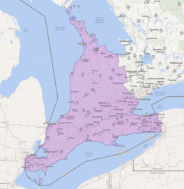
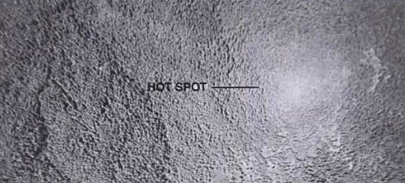
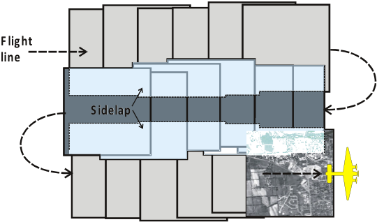
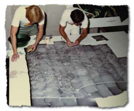
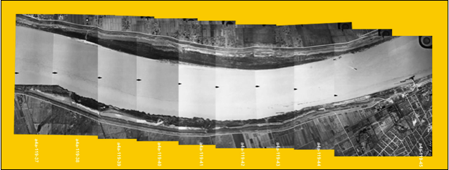
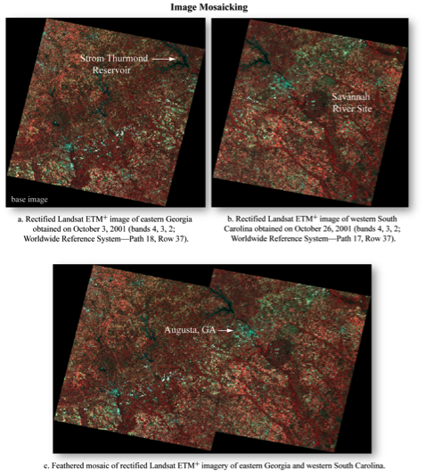

GEOG*2420
The Earth From Space
Flight Planning
John Lindsay
Fall 2015
Readings
Jensen Chapter 4, pg. 124-125
Image Acquistion
- There exists an enormous archive of earth imagery both with respect to
historical aerial photography and satellite imagery.
- Usually held by federal/provincial/state repositories.
- In Canada, the record extends 80 yrs back.
- Hard-copy vs. scanned digital vs. digital
- Varying cost of purchase.
SWOOP Images
- Southwestern Ontario Orthophotography Project (SWOOP) 2010
- 0.3 m pixel resolution orthophotos & 2-10 m DEM
- Access through the Data Resource Centre
- Free access for UofG

National Aerial Photo Library
- Other Canadian AP’s through the National Aerial Photo Library of Canada, Ottawa
- http://airphotos.nrcan.gc.ca/prod_e.php
- About $15 for a contact print and $30 for a pan scanned digital image (600 dpi)
- A typical project area could be 30 photos in size = $900.
When is archive data unsuitable?
- If existing data is out of date
- Wrong season
- The wrong scale for use
- Poor quality
- Might be due to degradation of film, poor weather/atmospheric conditions,
unsuitable film type/spectral bands, etc.
When is archive data unsuitable?
- In these situations, you must contract the acquisition of new imagery
- This is always more expensive than purchasing archived data
New image acquisition—things to remember
- Timing—usually a very small window
- Scale (flying height and focal length)
- Required percent overlap between photos
- Flightline (number, orientation)
- Film type
- Camera type and characteristics
- Aircraft capabilities
Time of Day Considerations
- When the sun angle is less than 30° long shadows can obscure valuable information.
- Can be very useful for interpreting terrain though.
- When the sun angle is quite high hot spots can be present...
Hot Spots
- Unusually bright spot on photo.
- Pronounced over water and forest.
- Occurs when sun angle is greater than about 52°.

(source: Paine and Kiser, 2001)
Weather Considerations
- Excessive humidity can cause image degradation due to scattering.
- Cloud cover also degrades images.
- Best to acquire after a front goes through.
- Rain washes the particulates out of the atmosphere
- Strong winds cause problems too...
Flightlines over a project area

(source: Jan Mersey)
Flightlines over a project area
- Must start by determining the mission constraints:
- Photo scale
- Camera focal length
- Film format (e.g. Large format)
- Image overlap
Photo Mosaic
- Multiple overlapping air photos are 'stitched' together
- Traditionally done by hand now usually done using software

(source: http://www.nrw.qld.gov.au/museum/articles_complete/mapping/aerial.html)
Photo Mosaic
Notice that the are radiometric differences between the images apparent as unmatched
tonal variation among photos

(source: unknown)
Types of Mosaics
- Index mosaics
- Usually prepared for the purpose of providing an index to individual photos in a series
- Uncontrolled mosaics
- Uses best fit but because of tilt of aircraft between exposures and topographic
displacement, these mosaics are not reliable
- Controlled mosaics
- Use ground control points and rectified imagery

(source: Jensen 2007)